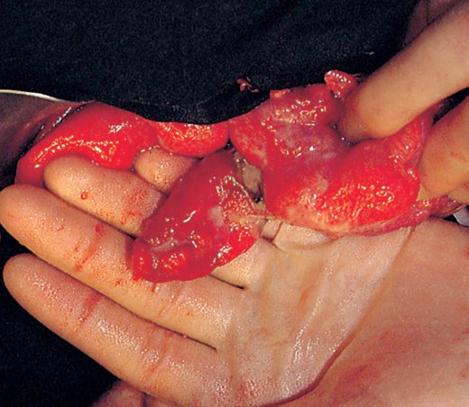
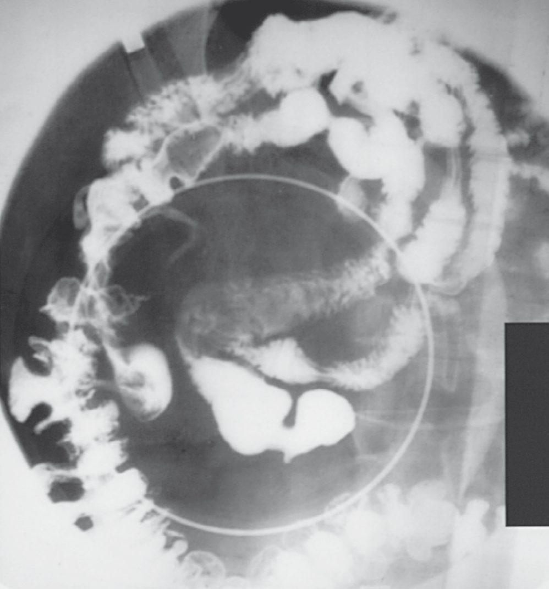
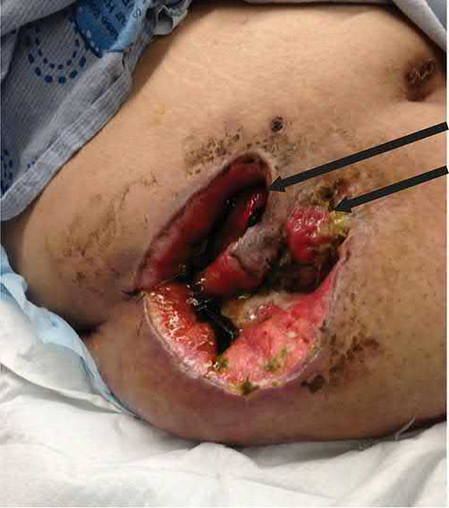
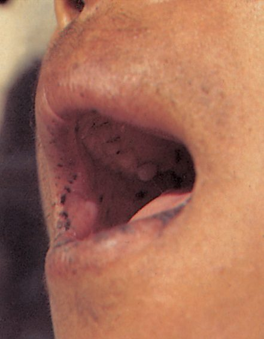
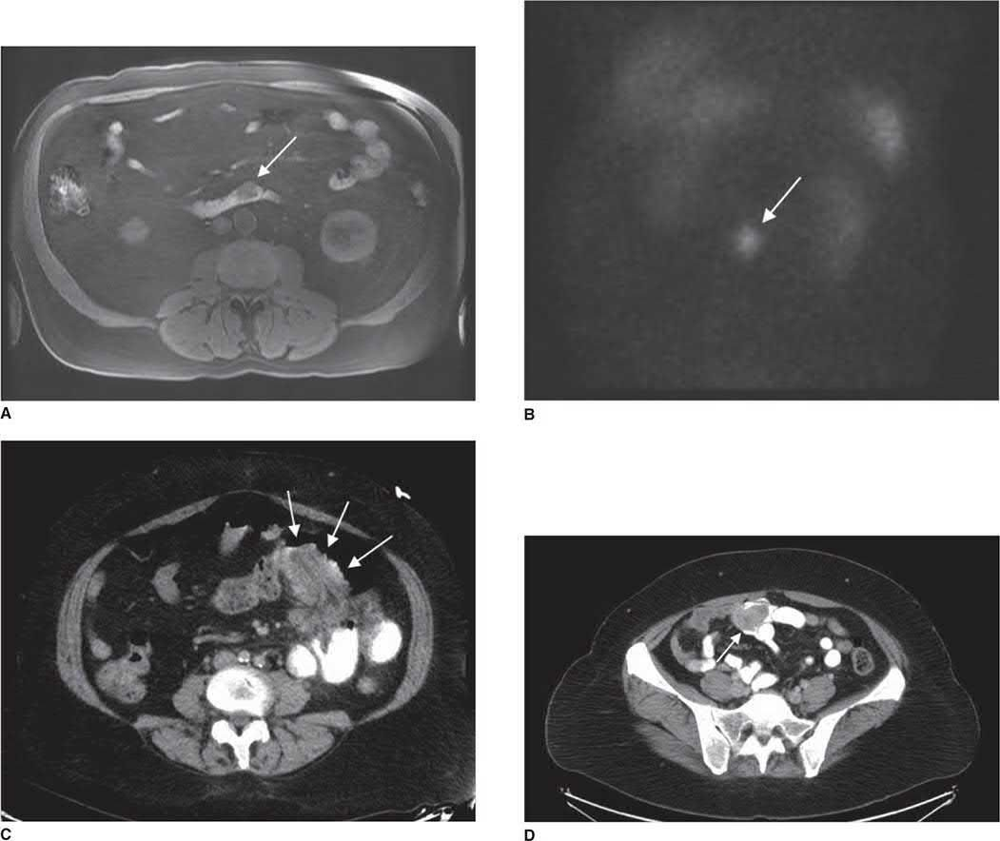

Small Bowel Disorders
Summary
- The small intestine is long, mobile and comparatively rarely diseased, so its disorders present either as an emergency (bleeding, obstruction or perforation) or as a chronic failure of absorption [1].
- This page covers the conditions that fall to the general surgeon outside obstruction and inflammatory bowel disease, which have pages of their own: Meckel's diverticulum, acquired jejunal diverticula, benign and malignant small bowel tumours, enterocutaneous fistula, and short bowel syndrome.
- Malignant small bowel tumours are rare, and adenocarcinoma is the most common of them [2].
- Short bowel syndrome and loss of enteral autonomy are expected after resection of more than 70% of the native intestine [1].
Definition
Meckel's diverticulum is a true diverticulum arising from failure of closure of the omphalomesenteric duct [3]. Acquired diverticula are different in origin and site: they develop most often in the jejunum and arise from the mesenteric side of the bowel, through mucosal herniation at the point of entry of the blood vessels where there is a potential defect in the muscularis [4].
- Short bowel syndrome and intestinal failure are used interchangeably [1].
- The absolute length of remnant bowel needed to sustain nutrient absorption varies with the individual and with age, but as a rule of thumb short bowel syndrome and loss of enteral autonomy are expected after resection of more than 70% of the native intestine [1].
- A functional definition, in which insufficient absorptive capacity produces diarrhoea, dehydration and malnutrition, is more appropriate than a length, though a standard definition of 200 cm has been widely used in adults [5].
Intestinal failure may also describe patients with normal or nearly normal intestinal length but abnormal function, from Crohn's disease, motility disorders such as intestinal pseudo-obstruction and long-segment Hirschsprung's disease, or diseases of the enterocyte such as intestinal epithelial dysplasia; these are less common than short bowel syndrome but share the same consequences [1].
Pathophysiology
Meckel's diverticulum
The classical teaching is a set of twos: the diverticulum lies about 2 feet from the ileocaecal valve and is present in 2% of the population, usually presenting in the first 2 years of life with bleeding [3]. Pancreatic tissue is the most common heterotopic tissue found within it, and can cause diverticulitis; gastric mucosa is the tissue most likely to make it symptomatic, bleeding being the commonest manifestation [3]. It accounts for 50% of all painless lower gastrointestinal bleeds in children under 2 [3].

Acquired jejunal diverticula
These vary in size and are frequently multiple [4]. They are commonly asymptomatic and found incidentally at surgery or on imaging, but may cause malabsorption through bacterial overgrowth, or present acutely if they become inflamed or perforate; bleeding is a rare complication, in contrast to sigmoid diverticular disease [4].

Enterocutaneous fistula
Fistulas are most commonly iatrogenic after surgery, anastomotic leakage, injury to the bowel or its blood supply, erosion by suction catheters, or laceration by wire mesh or retention sutures [1]. Other causes are predisposing conditions: Crohn's disease, malignancy, radiation enteritis, diverticulitis, intra-abdominal sepsis and trauma [1].
Factors that prevent a fistula healing are a foreign body in the tract, epithelialisation of the tract, downstream obstruction, radiation enteritis, associated infection such as abscess or sepsis, malignancy, and a short tract under 2 cm [5].

Adaptation and failure after massive resection
After massive resection, hypergastrinaemia and gastric acid hypersecretion occur and contribute significantly to diarrhoea [1]. Diarrhoea may also follow ileal resection, which disrupts the enterohepatic circulation so that excessive bile salts enter the colon and act as a cathartic [1]. Volume losses in the early phase may exceed 5 L/day [1].
Clinical features
Meckel's diverticulum presents differently by age: bleeding is the usual presentation in the first two years of life, whereas obstruction is the most common presentation in adults [3].
Jejunal diverticula are usually silent, presenting with malabsorption or as an acute abdominal emergency if inflamed or perforated [4].
Enterocutaneous fistula is usually not difficult to recognise. The typical presentation is a febrile postoperative patient with an erythematous wound; when a few skin sutures are removed, purulent or bloody discharge is noted, and leakage of enteric contents then follows [1].
Small bowel adenomas present with bleeding or obstruction and most are found in the duodenum [2]. Adenocarcinoma presents with obstruction and jaundice, a high proportion being duodenal; tumours arising from the ampulla of Vater present with jaundice, anaemia and guaiac-positive stools [2].
Etiology
Causes of short bowel syndrome include congenital malformation, traumatic injury, infection and ischaemia [1].
Benign small bowel tumours
Adenomas are the commonest and most are duodenal [2]. Peutz-Jeghers syndrome is an autosomal dominant condition caused by mutation of the STK11 gene, producing benign hamartomas throughout the small and large bowel with mucocutaneous melanotic pigmentation; affected patients have an increased rate of extraintestinal malignancy, most commonly breast cancer, but only a small risk of gastrointestinal malignancy, under 3%, and prophylactic colectomy is not indicated [2].

Malignant small bowel tumours
These are rare. Adenocarcinoma is the most common malignant small bowel tumour, a high proportion of them duodenal [2]. Risk factors for duodenal cancer are familial adenomatous polyposis, Gardner's syndrome, polyps, adenomas and von Recklinghausen's disease [2].

Infective causes
- Abdominal actinomycosis is rare, caused by Actinomyces israelii, and usually develops several weeks after an apparently straightforward perforated appendicitis [4].
- An abscess develops and spreads to retroperitoneal tissues and the adjacent abdominal wall, eventually forming multiple indurated discharging sinuses; the discharge is at first thin, watery and inoffensive, later thicker and malodorous, and secondary fistulation may occur with woody induration of the tissues [4]. In contrast to tuberculosis, the mesenteric lymph nodes are not involved and the intestinal lumen is not narrowed [4].
- Haematogenous spread by the portal vein may cause multiple liver abscesses [4].
Intestinal complications are common after the development of AIDS, when opportunistic organisms cause gastroenteritis, and HIV may also cause a specific enteropathy [4].
Diagnosis
For Meckel's diverticulum, a technetium-99m scan can be obtained where localisation is difficult, the ectopic gastric mucosa taking up the isotope [3].
Jejunal diverticula are frequently an incidental finding at surgery or on radiological imaging [4].
In actinomycosis, pus should be sent for bacteriological examination, which reveals the characteristic sulphur granules [4].
Scoring and Severity
There is no formal grading. The clinically decisive quantities are the length of remnant bowel and the volume of loss.
| Measure | Threshold |
|---|---|
| Resection producing short bowel syndrome | More than 70% of native intestine, as a rule of thumb [1] |
| Widely used length definition in adults | Small intestine under 200 cm [5] |
| Early volume losses after massive resection | May exceed 5 L/day [1] |
| Fistula tract length preventing healing | Short tract, under 2 cm [5] |
| Meckel's neck warranting segmental resection | Neck greater than one-third the diameter of the normal bowel lumen [3] |
Table collects the numerical thresholds cited above. Mortality from enterocutaneous fistula remains high at 10% in recent reports [1].
Treatment and Management
Short bowel syndrome
The first principle is prevention. In Crohn's disease, resection should be limited to segments with a particular complication; in surgery for intestinal ischaemia the smallest possible resection should be performed, with second-look operations to let ischaemic bowel demarcate, so that unnecessary extensive resection is avoided [1].
- After massive resection the course divides into early and late phases.
- Early treatment is directed at controlling diarrhoea, replacing fluid and electrolytes, and prompt institution of total parenteral nutrition in patients who cannot safely tolerate enteral feeding, with vigorous monitoring of intake and output [1].
- Acid hypersecretion is managed with H2 receptor antagonists or a proton pump inhibitor such as omeprazole, and cholestyramine helps where diarrhoea is due to unabsorbed bile salts acting as a cathartic in the colon [1].
For high-volume ostomy losses causing recurrent dehydration, initial management is reduction of gastric secretion with a proton pump inhibitor or H2 receptor antagonist, together with octreotide and loperamide. Small bowel transplantation is not part of initial management [5].
Enterocutaneous fistula
Improvement in outcome rests on prevention and, once a fistula occurs, on prompt recognition and intervention, with multidisciplinary care critical [1]. Where a fistula fails to heal on total parenteral nutrition and antisecretory therapy, the cause should be sought among the factors listed above, foreign body, epithelialisation, downstream obstruction, radiation enteritis, infection, malignancy or a short tract [5].
Actinomycosis
Treatment is penicillin or co-trimoxazole, which should be prolonged and in high dosage [4].
HIV-associated intestinal disease
Treatment is directed at the relevant organism, and surgery should be avoided if possible [4].
Surgeries
Meckel's diverticulum
An incidentally discovered diverticulum is usually left alone, unless gastric mucosa is suspected (the diverticulum feeling thick) or it has a very narrow neck [3]. Diverticulectomy suffices for uncomplicated diverticulitis or bleeding; segmental resection is needed for complicated diverticulitis such as perforation, or where the neck exceeds one-third the diameter of the normal bowel lumen [3].
Jejunal diverticula
- Elective resection of the affected segment can be effective for malabsorption, provided only a limited length of jejunum is involved [4].
- Where perforated jejunal diverticulitis is found at emergency laparotomy, small bowel resection is performed and the choice between primary anastomosis and stoma made on the degree of contamination, physiological stability, and local resources for managing a high-output jejunostomy [4].
- Complications of extensive jejunal diverticulosis can be extremely difficult to treat [4].
Small bowel tumours
Adenomas need resection when identified, often endoscopically [2]. Adenocarcinoma is treated by resection with adenectomy, and by Whipple procedure where the tumour lies in the second part of the duodenum [2].
Complications
Extensive resection risks short bowel syndrome, which is why bowel-preserving strategies matter in conditions requiring repeated operations [1]. Mortality from enterocutaneous fistula remains high at 10% [1].
Jejunal diverticula may cause malabsorption from bacterial overgrowth, inflammation, perforation and, rarely, bleeding [4]. Actinomycosis may lead to multiple liver abscesses through portal venous spread, and to secondary fistulation with woody induration [4].
Before the 1960s any cause of intestinal failure was nearly always fatal; numerous treatment strategies have since been developed, though management continues to vary greatly between centres [1].
Prognosis
Outcome in short bowel syndrome depends on remnant length and on whether enteral autonomy can be regained, which is not generally expected once more than 70% of the intestine has been resected [1]. Intestinal failure, once nearly always fatal, is now treatable, although practice varies widely by centre [1].
Enterocutaneous fistula still carries around 10% mortality [1]. In Peutz-Jeghers syndrome the gastrointestinal malignancy risk is small, under 3%, but extraintestinal malignancy is increased, most commonly breast cancer [2].
References
- Sabiston Textbook of Surgery, 22nd ed., Ch. 91 Small Intestine
- The ABSITE Review, 2022, Small bowel tumors
- The ABSITE Review, 2022, Meckel's diverticulum
- Bailey & Love's Short Practice of Surgery, 28th ed., Ch. 74 The small intestine
- Schwartz's Principles of Surgery: ABSITE and Board Review, Ch. 28 Small Intestine
- Maingot's Abdominal Operations, 13th ed., Ch. 16
- Maingot's Abdominal Operations, 13th ed., Ch. 39